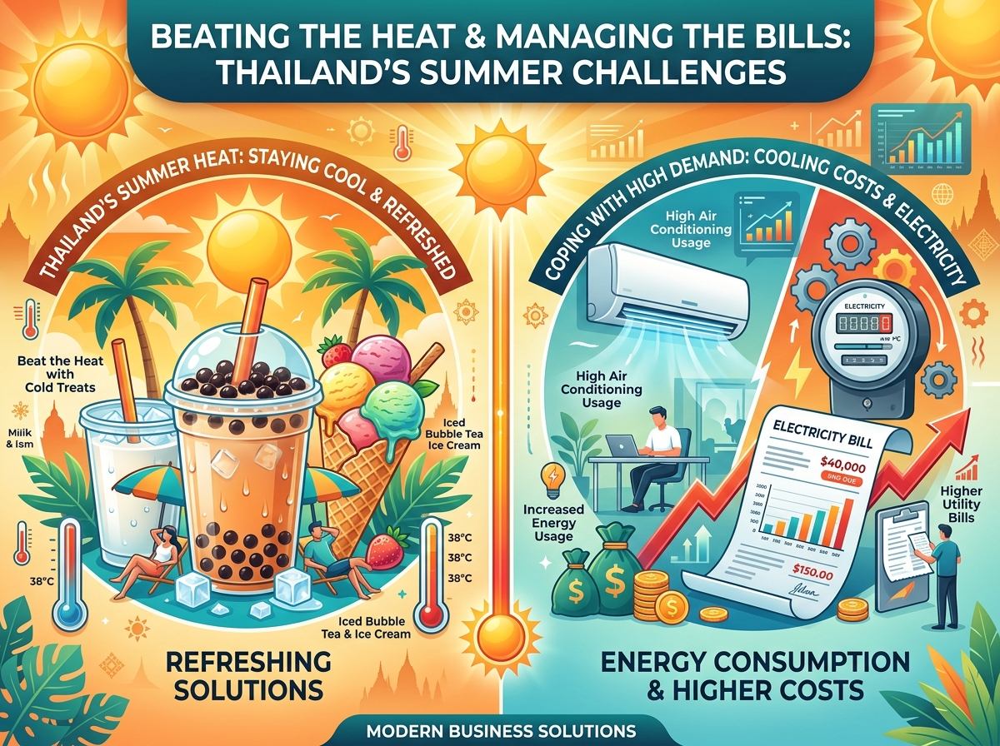
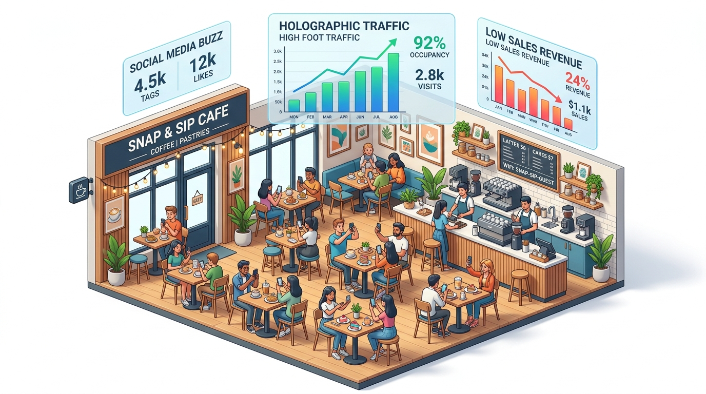
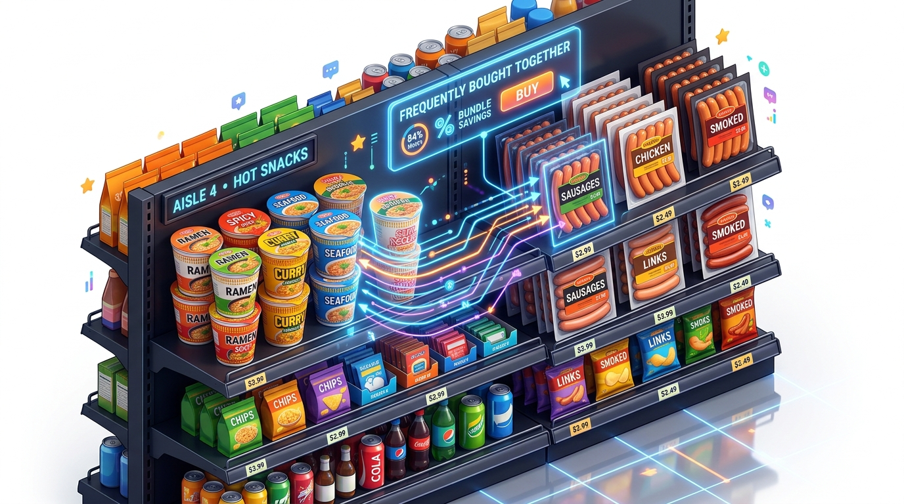

ขั้นที่ 1 'ASK' (ตั้งคำถาม)
Data Thinking ศิลปะการตั้งคำถาม
Fundamentals of Data Science (พื้นฐานวิทยาการข้อมูล)
ผู้สอน: อาจารย์สุรชัย โกยสันติสุข | คณะการสร้างเจ้าของธุรกิจ มหาวิทยาลัยศรีปทุม
Data Science คือกระบวนการ 5 ขั้นตอน
ตั้งคำถาม (ASK)
รู้ว่าธุรกิจต้องการแก้ปัญหาอะไร?
เก็บข้อมูล (COLLECT)
หาข้อมูลที่ตอบคำถามได้จากไหน?
เตรียมข้อมูล (PREPARE)
ทำความสะอาดและจัดโครงสร้าง
วิเคราะห์ (ANALYZE)
หา Insight / ความสัมพันธ์ / แนวโน้ม
สื่อสาร (ACT)
เล่าเรื่องและนำเสนอให้เกิด Action
ข้อมูลเยอะ แต่ไม่รู้จะเอาไปทำอะไร?
ปัญหาที่พบบ่อย (Pain Points)
- มีข้อมูลการขายมากมาย แต่ยอดขายกลับตกฮวบ
- ดูรายงานตัวเลขแล้วไม่รู้เรื่อง ไม่รู้ว่ามีปัญหาซ่อนอยู่ตรงไหน
- มีเครื่องมือ AI (เช่น Gemini) แต่ไม่รู้จะสั่ง Prompt ให้วิเคราะห์อะไร
ทางออกคือ Data Thinking
- เริ่มที่ปัญหาธุรกิจเสมอ ไม่ใช่เริ่มจากการงมในตัวเลข
- คิดอย่างเป็นระบบ: สงสัย → ตั้งสมมติฐาน → หาข้อมูลพิสูจน์
- เปลี่ยนข้อมูลดิบให้เป็น Action: รู้วิธีแก้ปัญหาและเพิ่มยอดขายได้ทันที
ศิลปะการตั้งคำถามทางธุรกิจที่ดี
3 หัวใจสำคัญของคำถามที่ดี
- ชัดเจน เฉพาะเจาะจง: ระบุตัวแปร เวลา และช่องทางที่ต้องการรู้
- วัดผลได้ด้วยข้อมูล: มีตัวเลขสถิติหรือหลักฐานมาตอบคำถามได้
- นำไปสู่การกระทำ (Actionable): รู้คำตอบแล้วปรับกลยุทธ์ต่อได้ทันที
คำถามที่ "กว้างเกินไป"
"ทำไมยอดขายเดือนนี้ไม่ค่อยดี?"
ปัญหา: กว้างไป ไม่รู้จะเริ่มดึงข้อมูลจากตรงไหน วัดผลและแก้ไขยาก
คำถามที่ "ดีและเจาะจง"
"โปรฯ ลด 20% บน LINE MAN ช่วงเที่ยง ดึงลูกค้าใหม่ได้กี่ % และคุ้ม GP หรือไม่?"
ข้อดี: เจาะจง วัดผลได้ และตัดสินใจปรับโปรโมชั่นได้ทันที
กับดัก: Correlation ไม่ใช่ Causation
ความสัมพันธ์ (Correlation)
เหตุการณ์สองอย่างมีตัวเลข เพิ่มขึ้นพร้อมกัน ในช่วงเวลาเดียวกัน
เช่น ในเดือน เม.ย. ยอดขาย "ชานม/ไอศกรีม" พุ่งสูงขึ้น พร้อมกับ "บิลค่าไฟฟ้าของร้าน" ที่พุ่งขึ้นเท่าตัว
ความเป็นเหตุเป็นผล (Causation)
สิ่งหนึ่งเป็น "ต้นเหตุที่แท้จริง" ที่ทำให้อีกสิ่งหนึ่งเกิดขึ้น
การขายชานม ไม่ได้ทำให้ค่าไฟขึ้น! แต่สาเหตุที่แท้จริงของทั้งคู่คือ "สภาพอากาศร้อนจัดช่วงสงกรานต์ (>40°C)" ทำให้คนอยากกินของเย็น และตู้แช่/แอร์ทำงานหนักขึ้น

การตั้งสมมติฐาน (Hypothesis) ก่อนวิเคราะห์
พบปัญหา (Problem)
ระบุปัญหาทางธุรกิจที่เกิดขึ้นให้ชัดเจน เจาะจงตัวเลขและช่วงเวลา
ตั้งสมมติฐาน (Hypothesis)
คาดเดาสาเหตุที่เป็นไปได้จากประสบการณ์และบริบทแวดล้อม
หาข้อมูลพิสูจน์ (Data)
ระบุชุดข้อมูลหรือตัวเลขที่ต้องนำมาตรวจสอบว่าสมมติฐานจริงหรือไม่
แม่ค้า Live สด: ปัญหา CF แล้วทิ้งออเดอร์
1. พบปัญหา (Problem)
Problemลูกค้าพิมพ์ CF สั่งซื้อหน้าไลฟ์เยอะมาก แต่มีอัตรา "ทิ้งออเดอร์ (ไม่โอนเงิน)" สูงถึง 40%
2. ตั้งสมมติฐาน (Hypothesis)
Hypothesis- สมมติฐาน A: "แอดมินตอบแชทสรุปยอดช้าเกินไป ทำให้ลูกค้าอารมณ์เย็นลงและเปลี่ยนใจ"
- สมมติฐาน B: "ไม่ได้แจ้งค่าส่งในไลฟ์ ลูกค้าตกใจค่าส่งเมื่อเห็นยอดสรุปในอินบ็อกซ์"
3. หาข้อมูลพิสูจน์ (Data)
Data to Collect
• เก็บข้อมูลเวลา (Response Time) ที่แอดมินทักแชท เทียบกับ อัตราการโอนเงินสำเร็จ
• ทำ A/B Test: ไลฟ์แบบแจ้งค่าส่งเหมาๆ ชัดเจนหน้ากล้อง เทียบกับ ไลฟ์แบบไม่แจ้ง
ร้านชานมใต้ออฟฟิศ: คนเดินผ่านเยอะแต่ยอดเช้าตก?

1. พบปัญหา (Problem)
Problemร้านอยู่ใต้อาคารสำนักงาน คนเดินผ่านหนาแน่นช่วงเช้า (07.30 - 09.00 น.) แต่ ยอดขายช่วงเช้ามีเพียง 10% ของทั้งวัน
2. ตั้งสมมติฐาน (Hypothesis)
Hypothesis- สมมติฐาน A: "คนทำงานเร่งรีบ กลัวคิวยาวและใช้เวลาชงนานจนเข้างานสาย"
- สมมติฐาน B: "เมนูมีแต่ชานมหวาน คนช่วงเช้าต้องการ 'กาแฟเข้มข้น / แซนด์วิช' เพื่อเริ่มวัน"
3. หาข้อมูลพิสูจน์ (Data)
Data to Collect
• จับเวลาเฉลี่ยการสั่งจนได้รับเครื่องดื่ม (Order-to-Handover Time)
• สำรวจประเภทเครื่องดื่ม/อาหารที่พนักงานถือเข้าตึกช่วงเช้า (กาแฟสด vs ชานม)
ร้านหมูกระทะ: ลูกค้าเต็มร้านแต่กำไรหด?
1. พบปัญหา (Problem)
Problemลูกค้าแน่นร้านทุกเย็น คิวยาว แต่เมื่อสรุปบัญชีสิ้นเดือนพบว่า กำไรสุทธิลดลงถึง 25%
2. ตั้งสมมติฐาน (Hypothesis)
Hypothesis- สมมติฐาน A: "ลูกค้าตักอาหารเกินพอดีและมีปริมาณอาหารเหลือทิ้ง (Food Waste) บนโต๊ะสูง"
- สมมติฐาน B: "ราคาต้นทุนเนื้อหมูสดจากซัพพลายเออร์ปรับขึ้นสูงโดยร้านไม่ได้ปรับตัว"
3. หาข้อมูลพิสูจน์ (Data)
Data to Collect
• สุ่มชั่งน้ำหนักเศษอาหารที่ลูกค้าทานเหลือทิ้งต่อโต๊ะในแต่ละวัน
• บันทึกและวิเคราะห์แนวโน้มราคาซื้อเนื้อสัตว์ย้อนหลัง 3 เดือน เปรียบเทียบราคาตลาด
4 ระดับการวิเคราะห์ข้อมูลเพื่อการตัดสินใจ
1. Descriptive
พรรณนา"เกิดอะไรขึ้น?"
What happened?
สรุปภาพรวมจากข้อมูลอดีต เช่น ยอดขายรายวัน กำไร สต็อก
2. Diagnostic
วินิจฉัย"ทำไมถึงเกิดสิ่งนี้?"
Why did it happen?
เจาะลึกหาสาเหตุของปัญหา หรือปัจจัยที่ทำให้ยอดขายเพิ่ม/ลด
3. Predictive
พยากรณ์"อะไรจะเกิดขึ้นต่อไป?"
What will happen?
คาดการณ์แนวโน้มล่วงหน้า เพื่อเตรียมสต็อกและกำลังคน
4. Prescriptive
แนะนำ"เราควรทำอย่างไรดี?"
What should we do?
เสนอทางเลือกและกลยุทธ์ที่ดีที่สุดในการตัดสินใจแก้ปัญหา
4 ระดับกับ ร้านหมูกระทะบุฟเฟ่ต์
| ระดับการวิเคราะห์ | คำถาม & การหาคำตอบจากข้อมูล |
|---|---|
|
1. Descriptive (พรรณนา) "เกิดอะไรขึ้น?" |
ถาม: ยอดขายและกำไรเดือนนี้เป็นอย่างไร? ตอบ: ยอดขายโต 15% แต่กำไรสุทธิกลับลดลง 20% แม้ลูกค้าจะเต็มร้านทุกวัน |
|
2. Diagnostic (วินิจฉัย) "ทำไมถึงเกิดสิ่งนี้?" |
ถาม: ทำไมกำไรถึงลดลงทั้งที่ลูกค้าแน่นร้าน? ตอบ: ต้นทุนหมูสดแพงขึ้น 18% และลูกค้าตักเหลือทิ้งเฉลี่ยโต๊ะละ 400 กรัม |
|
3. Predictive (พยากรณ์) "อะไรจะเกิดขึ้นต่อไป?" |
ถาม: ถ้าปล่อยไว้แบบนี้ผลจะเป็นอย่างไร? ตอบ: หากราคาหมูยังสูงและลูกค้ากินเหลือเท่าเดิม ร้านจะขาดทุนสะสมใน 2 เดือน |
|
4. Prescriptive (แนะนำ) "เราควรทำอย่างไรดี?" |
ถาม: เราควรปรับกลยุทธ์อย่างไรเพื่อแก้ปัญหา? ตอบ: เปลี่ยนถาดตักให้เล็กลง, ติดป้ายปรับอาหารเหลือทิ้งให้ชัดเจน, ทำสัญญาล็อกราคาหมูล่วงหน้า |
4 ระดับกับ ร้านสะดวกซื้อ: มาม่าคัพและไส้กรอก
| ระดับการวิเคราะห์ | คำถาม & การหาคำตอบจากข้อมูล |
|---|---|
|
1. Descriptive (พรรณนา) "เกิดอะไรขึ้น?" |
ข้อมูลบอกว่า: ช่วงดึก (23.00 - 03.00 น.) "บะหมี่คัพ" มักถูกซื้อพร้อมกับ "ไส้กรอก/ไข่ออนเซ็น" สูงถึง 65% |
|
2. Diagnostic (วินิจฉัย) "ทำไมถึงเกิดสิ่งนี้?" |
สาเหตุ: คนหิวดึกต้องการอาหารร้อนที่อิ่มท้อง ทานง่าย และไส้กรอกช่วยเพิ่มโปรตีนให้อิ่มนานขึ้น |
|
3. Predictive (พยากรณ์) "อะไรจะเกิดขึ้นต่อไป?" |
แนวโน้ม: ยอดขายคู่นี้จะพุ่งสูงขึ้น 2 เท่าในคืนวันศุกร์-เสาร์ และช่วงฤดูสอบของนักศึกษา |
|
4. Prescriptive (แนะนำ) "เราควรทำอย่างไรดี?" |
กลยุทธ์ร้าน: ย้ายตู้แช่ไส้กรอกมาไว้ติดกับจุดกดน้ำร้อน และจัดโปรโมชั่นเซ็ต "คู่หูดึกดื่น" เพิ่มยอดขายต่อบิลทันที |

4 ระดับกับ แอปส่งอาหารและพี่ไรเดอร์
| ระดับการวิเคราะห์ | การวิเคราะห์และการตัดสินใจ |
|---|---|
|
1. Descriptive (พรรณนา) "เกิดอะไรขึ้น?" |
ข้อมูลบอกว่า: ช่วง 11.30 - 13.00 น. ออเดอร์กระจุกตัวในย่านออฟฟิศหนาแน่น แต่ไรเดอร์รับงานไม่ทัน ลูกค้ารอนาน |
|
2. Diagnostic (วินิจฉัย) "ทำไมถึงเกิดสิ่งนี้?" |
สาเหตุ: ไรเดอร์ส่วนใหญ่จอดรอตามชานเมือง/ที่พัก ทำให้ขับฝ่ารถติดเข้ามาไม่ทันเวลาลูกค้าหิว |
|
3. Predictive (พยากรณ์) "อะไรจะเกิดขึ้นต่อไป?" |
แนวโน้ม: พรุ่งนี้พยากรณ์อากาศระบุว่าฝนจะตกช่วงเที่ยง ออเดอร์ในย่านออฟฟิศจะพุ่งสูงขึ้นอีก 50% |
|
4. Prescriptive (แนะนำ) "เราควรทำอย่างไรดี?" |
คำแนะนำระบบ: ส่งแจ้งเตือนและให้โบนัสพิเศษ (Incentive) ดึงไรเดอร์เข้ามาสแตนด์บายแถวออฟฟิศตั้งแต่ 11.00 น. ก่อนฝนตก |
ได้เวลา Quiz Game!
ทบทวน: การตั้งคำถามธุรกิจ, การตั้งสมมติฐาน และ 4 ระดับการวิเคราะห์
เตรียมสมาร์ตโฟนให้พร้อม แล้วเข้าเว็บ kahoot.it
สรุปประเด็นสำคัญ (Takeaways)
1. Data Thinking & Right Questions
เริ่มที่ปัญหาธุรกิจเสมอ ตั้งคำถามที่ ชัดเจน เจาะจง วัดผลได้ และนำไป Action ต่อได้ทันที ระวังอย่าตกหลุมพราง Correlation ≠ Causation
2. Hypothesis Thinking (3 ขั้นตอน)
พบปัญหา → ตั้งสมมติฐาน → หาข้อมูลพิสูจน์ ช่วยให้เราหาหลักฐานได้ตรงเป้าหมาย ประหยัดเวลา และไม่ต้องงมในตัวเลข
3. 4 Levels of Analytics
Descriptive (เกิดอะไรขึ้น) → Diagnostic (ทำไมถึงเกิด) → Predictive (อะไรจะเกิดต่อ) → Prescriptive (ควรทำอย่างไรดี)
ครั้งที่ 3 สัปดาห์หน้า
Session 3 Previewประเภทข้อมูลและแหล่งข้อมูลสำหรับเจ้าของธุรกิจ (COLLECT)
Structured vs Unstructured · แหล่งข้อมูลภายใน (POS, LINE OA) · แหล่งข้อมูลภายนอก (Google Trends) · PDPA เบื้องต้น
กิจกรรม: "ถ้าฉันเป็นเจ้าของธุรกิจ"
สิ่งที่ต้องทำใน Workshop (กลุ่มละ 4-5 คน)
- 1. จำลองธุรกิจ: เลือกธุรกิจ 1 ประเภทที่กลุ่มสนใจ (เช่น คาเฟ่, เสื้อผ้าออนไลน์, บุฟเฟต์)
- 2. ตั้งคำถาม 5 ข้อ: คิดคำถามธุรกิจที่อยากรู้คำตอบ พร้อมระบุระดับการวิเคราะห์ (1-4)
- 3. ตั้งสมมติฐาน 3 ข้อ: เลือก 3 คำถามมาตั้งสมมติฐาน (คาดเดาสาเหตุอย่างมีหลักการ)
- 4. วางแผนหาข้อมูล: ระบุว่าต้องใช้ชุดข้อมูลหรือตัวเลขใดบ้างเพื่อนำมาพิสูจน์สมมติฐาน
📌 การส่งงาน: เปิด Google Docs / Slides ของกลุ่มตนเอง พิมพ์สรุปและแชร์ลิงก์ส่งให้ผู้สอนท้ายคาบ